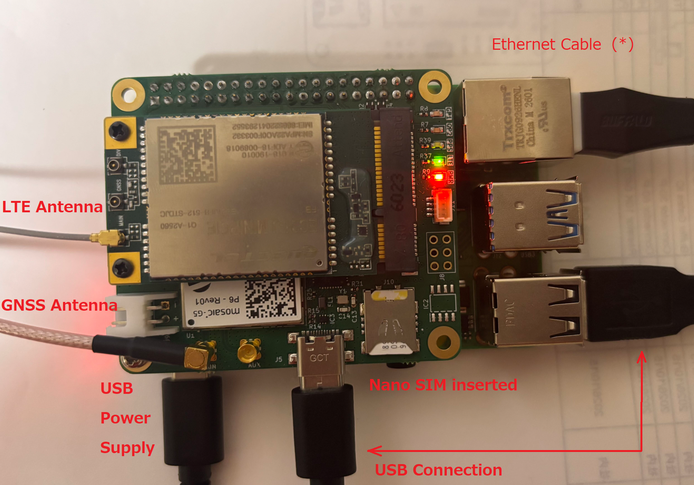
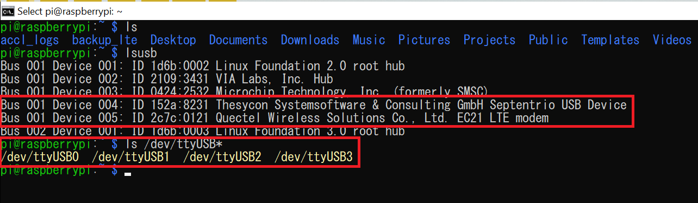
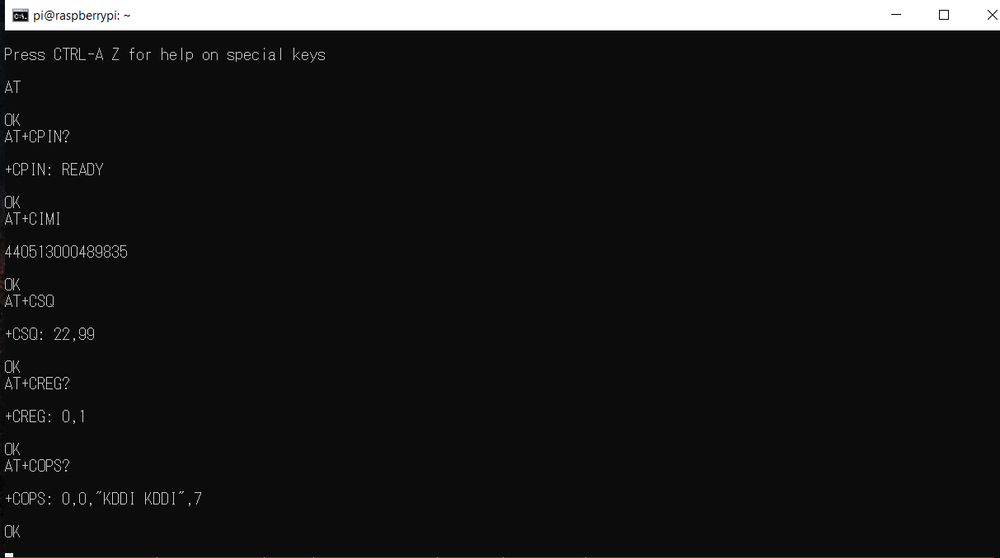
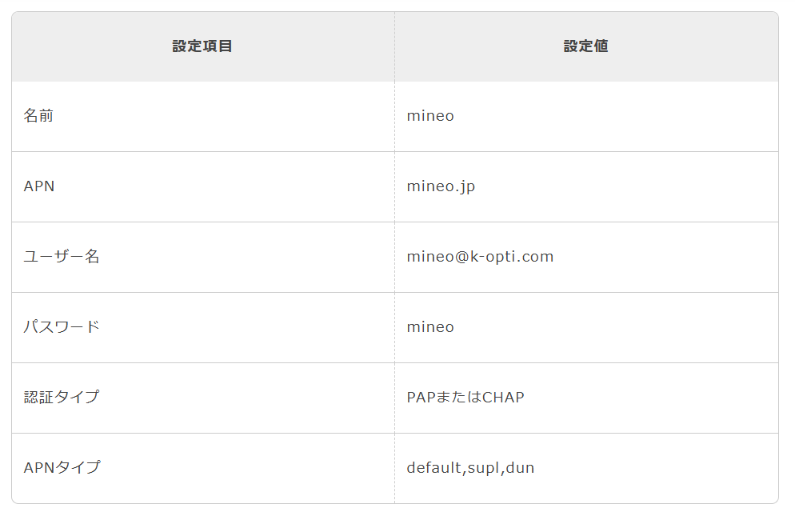

LTE Connectivity with the iChidori-Crest¶
Overview¶
This guide describes how to establish an LTE mobile data connection using the iChidori-Crest, Raspberry Pi, and Quectel EC21-J LTE modem.
The iChidori-Crest features an mPCIe slot for compatible LTE modem modules and an onboard nano-SIM slot. In this example, the Quectel EC21-J (LTE Cat 1) is used to establish a mobile data connection through Point-to-Point Protocol (PPP).
The procedure covers:
- Verifying that the LTE modem is detected by the Raspberry Pi.
- Communicating with the modem using AT commands.
- Configuring the APN for the SIM card provider.
- Establishing an LTE data connection using PPP.
- Configuring the connection to start automatically at boot.
Setup Requirement¶
The following hardware and software are required:
- Raspberry Pi 4 with the iChidori-Crest attached.
- Raspberry Pi OS with access through SSH or a local terminal.
- Quectel EC21-J LTE modem installed in the mPCIe slot.
- An active nano-SIM card with an LTE data plan, inserted into the iChidori-Crest's SIM slot.
- A 5 V power supply for the Raspberry Pi 4.
- A USB-C cable to connect the Raspberry Pi to the iChidori-Crest's USB port.
Hardware Setup¶

Step 1 — Verify LTE Modem Detection¶
After powering on the Raspberry Pi with the LTE modem installed on iChidori-Crest, verify that the LTE modem is detected over USB.
Check USB Devices¶
Execute the following commands:
Example output:

The device ID and bus information may differ depending on the hardware and USB configuration.
Quectel EC21-J USB Serial Interfaces
The Quectel EC21-J typically exposes four USB serial interfaces (/dev/ttyUSB0 to /dev/ttyUSB3). Each interface serves a specific purpose.
| Serial Port | Typical Function | Description |
|---|---|---|
/dev/ttyUSB0 |
Modem management | General modem control and diagnostic functions. |
/dev/ttyUSB1 |
GNSS NMEA output | GNSS data interface, if supported and enabled in the modem configuration. |
/dev/ttyUSB2 |
AT command interface | Used to send AT commands for modem configuration, SIM status, signal strength, and network registration. |
/dev/ttyUSB3 |
PPP data connection | Commonly used for establishing a PPP connection, depending on the modem firmware and USB configuration. |
The interface assignments shown above are typical examples and may vary depending on the modem firmware and configuration. Verify the available interfaces and their functions on the target device before use.
GNSS and LTE USB Interfaces
The Septentrio mosaic-G5 GNSS module typically appears as /dev/ttyACM0 and /dev/ttyACM1, while the Quectel LTE modem uses /dev/ttyUSBx interfaces.
These device names identify different hardware interfaces and should not be confused.
Step 2 — Verify Modem Communication and Configure the APN¶
This step verifies communication with the Quectel EC21-J modem, checks the SIM card and mobile network status, and configures the Access Point Name (APN) for the LTE connection.
Install an AT Command Terminal¶
AT commands can be sent to the LTE modem through its AT command interface using a serial terminal or other serial communication tools.
This guide uses minicom as an example because it provides an interactive terminal for sending AT commands and viewing modem responses. Other tools can be used if preferred.
To install minicom:
Open the AT Command Interface¶
Connect to the modem's AT command port:
The example uses /dev/ttyUSB2 as the AT command interface. Confirm the port assignment according to the USB serial interface mapping described in Step 1.
If necessary, enable local echo by pressing Ctrl+A, followed by E, so that typed characters are displayed in the terminal.
Verify Modem and SIM Status¶
Enter the following AT commands for verify LTE EC21-J modem status.
| AT Command | Purpose | Expected Response |
|---|---|---|
AT |
Verify communication with the modem | OK |
AT+CPIN? |
Check SIM card status | +CPIN: READY |
AT+CIMI |
Read the SIM's IMSI | Numeric IMSI value |
AT+CSQ |
Check signal strength | +CSQ: <rssi>,<ber> |
Verify Network Registration¶
Check the mobile network registration status:
The commands provide the following information:
| AT Command | Purpose |
|---|---|
AT+CREG? |
Check circuit-switched network registration status |
AT+CEREG? |
Check LTE/EPS network registration status |
AT+COPS? |
Identify the selected mobile network operator |
Example response:

Network Registration
If the modem is not registered, verify SIM activation, antenna connection, signal strength, carrier coverage, and the SIM's network access settings before proceeding.
Configure the APN¶
The Access Point Name (APN) identifies the packet data network used by the mobile carrier.
This example uses the APN settings for mineo on the au network. The APN and authentication parameters must match the SIM card provider's configuration.

Before configuring the APN, detach from the network to allow changes to the PDP context:
Response: OK
Set the PDP context with the carrier APN:
Response: OK
Set the APN with authentication credentials (CHAP):
Response: OK
Verify the PDP context configuration:
Response:
Re-attach to the network:
Expected response: OK
Verify network registration:
Response:
A registration status of 1 confirms that the modem is registered on the home network.
After completing the modem checks and APN configuration, exit Minicom.
Step 4 — Establish a PPP Data Connection¶
PPP allows the Raspberry Pi to exchange IP traffic with the LTE modem over a serial interface. When the connection is established successfully, the Raspberry Pi creates a network interface named ppp0.
Install and Verify PPP¶
Check whether pppd is installed:
If the command is unavailable, install the PPP package:
Create the PPP Peer Configuration¶
Create a peer configuration file:
Add the following configuration:
/dev/ttyUSB3
115200
connect "/usr/sbin/chat -v -f /etc/chatscripts/mineo-ec21"
noauth
defaultroute
usepeerdns
noipdefault
novj
novjccomp
noccp
ipcp-accept-local
ipcp-accept-remote
lock
noipv6
lcp-echo-interval 0
Save the file and exit the editor.
Create the Chat Script¶
Create the chat script used to initialize the modem before starting PPP:
Add the following content:
ABORT "BUSY"
ABORT "NO CARRIER"
ABORT "ERROR"
TIMEOUT 30
"" AT
OK ATH
OK ATE0
OK AT+CGDCONT=1,"IP","mineo.jp"
OK ATD*99#
CONNECT ""
Save the file and exit.
The chat script sends AT commands to initialize the modem, configure the APN, and request a data connection. Once the modem returns CONNECT, PPP negotiation begins.
Configuration File Reference
/etc/ppp/peers/mineo-ec21-usb
| Parameter | Description |
|---|---|
/dev/ttyUSB3 |
Serial interface used for the PPP data connection |
115200 |
Serial communication speed |
connect |
Runs the chat script before PPP negotiation |
noauth |
Does not require the peer to authenticate to the Raspberry Pi |
defaultroute |
Requests installation of a default route through PPP |
usepeerdns |
Accepts DNS server information supplied by the peer |
noipdefault |
Allows the peer to assign the local IP address |
lock |
Uses UUCP-style locking to help prevent serial-port conflicts |
noipv6 |
Disables IPv6 negotiation |
lcp-echo-interval 0 |
Disables periodic LCP echo requests |
/etc/chatscripts/mineo-ec21
| Parameter | Description |
|---|---|
ABORT |
Stops the connection attempt if a specified error string is received |
TIMEOUT 30 |
Sets a 30-second timeout for chat operations |
"" AT |
Sends the initial AT command |
OK ATH |
Requests termination of any existing call |
OK ATE0 |
Disables modem command echo |
OK AT+CGDCONT=... |
Configures the APN |
OK ATD*99# |
Requests a packet data connection |
CONNECT "" |
Waits for the modem's connection response |
Verify the Data Interface
This example uses /dev/ttyUSB3 as the PPP interface. Confirm that this port supports the required data connection on the EC21-J firmware in use.
If the modem does not return CONNECT, check the port assignment, SIM status, APN, network registration, and modem-specific PPP dialing requirements.
Start the PPP Connection¶
Start PPP using the peer configuration:
Keep the terminal open while testing the connection.
Verify the Network Interface¶
In a separate terminal, execute:
Example output:
ppp0: <POINTOPOINT,MULTICAST,NOARP,UP,LOWER_UP> mtu 1500 ...
inet 100.70.64.85 peer 10.64.64.64/32 scope global ppp0
The IP addresses shown above are examples. The assigned addresses depend on the carrier and connection session.
Test Internet Connectivity¶
Send ICMP packets through the PPP interface:
Example output:
64 bytes from 8.8.8.8: icmp_seq=1 ttl=115 time=165 ms
64 bytes from 8.8.8.8: icmp_seq=2 ttl=115 time=161 ms
Successful replies confirm that IP connectivity is available through the PPP interface.
LTE Connection Established
If ppp0 is up and the ping test succeeds, the Raspberry Pi can exchange IP traffic over the LTE connection.
If the interface is active but the ping test fails, check the routing table, carrier restrictions, and network connectivity.
Step 5 — Configure Automatic Connection at Boot¶
A systemd service can start pppd automatically after each reboot.
Create the Systemd Service¶
Create the service file:
Add the following configuration:
[Unit]
Description=PPP LTE Connection (mineo EC21)
After=network.target
Wants=network.target
[Service]
Type=simple
ExecStartPre=/bin/sleep 10
ExecStart=/usr/sbin/pppd call mineo-ec21-usb nodetach
Restart=on-failure
RestartSec=10
[Install]
WantedBy=multi-user.target
Save the file and exit.
The ExecStartPre command introduces a short delay to allow the modem to initialize before PPP starts. The nodetach option keeps pppd in the foreground so that systemd can monitor the process.
Enable and Start the Service¶
Reload the systemd configuration:
Enable the service at boot:
Start the service:
Check Service Status¶
Check whether the service is running:
Example output:
● ppp-lte-mineo.service - PPP LTE Connection (mineo EC21)
Active: active (running)
...
pppd[2355]: Connect: ppp0 <--> /dev/ttyUSB3
The exact output varies depending on the system and connection state.
Inspect the service logs:
To follow the logs in real time:
Startup Behavior
The 10-second delay is a simple way to accommodate modem initialization. If the modem takes longer to become available, adjust the delay or implement a more robust device-readiness check.
Automatic reconnection depends on the modem, network availability, and PPP configuration. Verify the behavior after rebooting the Raspberry Pi.
Summary¶
This guide demonstrated how to establish an LTE mobile data connection using the iChidori-Crest HAT, Raspberry Pi, and Quectel EC21-J modem.
The procedure covered:
- Verifying USB modem detection and serial interfaces.
- Testing modem communication using AT commands.
- Configuring the carrier's APN.
- Establishing an LTE data connection through PPP.
- Configuring automatic connection startup using systemd.
With LTE connectivity configured, the Raspberry Pi can access mobile data networks without relying on a local Ethernet or Wi-Fi connection.
This provides a foundation for deploying the iChidori-Crest in remote monitoring and GNSS applications where a conventional network connection may not be available.